library(tidyverse)
library(rstan)
library(bayesplot)
library(patchwork)
library(posterior)
rstan_options(auto_write = TRUE) # reuse compiled Stan models
options(mc.cores = 1) # run the Stan chains one after another
color_scheme_set("purple") # colors for the diagnostic plots4 Diagnosing Markov Chains
A Markov chain can have the right stationary distribution and still give a poor estimate after a thousand iterations. It may spend much of that time near its starting point, move slowly through the distribution, or explore only one of several regions. The convergence results of Chapter 3 describe what happens as a run grows indefinitely. In practice, we run a chain for a limited number of iterations and must decide whether the resulting estimates are accurate enough.
Suppose two chains each produce 20,000 values from a standard Normal target. Both aim at a distribution with mean zero and standard deviation one. If we repeated both simulations, would their averages vary equally much from run to run? And if one average is 0.04, is that a reason to worry? We will use this simple target to investigate what a chain’s behavior tells us about the accuracy of its estimates.
We will then apply the same reasoning to a Bayesian analysis: estimating the proportion of Dutch-language songs on a radio station. There, we will need to judge the precision of a posterior mean and a credible interval. The central question throughout is how much confidence we can place in a finite simulation.
Run the following setup before working through the examples. We use tidyverse to organize and summarize the draws, posterior to calculate diagnostics, and bayesplot and patchwork to draw and combine the plots. The rstan package fits the radio model later in the chapter.
Goals
- Interpret trace plots and identify evidence of initialization effects, slow movement, and disagreement between chains.
- Explain how dependence affects the precision of a Monte Carlo average.
- Calculate and interpret effective sample size and Monte Carlo standard error, and use them to plan a longer run.
- Distinguish initialization bias, Monte Carlo variation, and posterior uncertainty.
- Compare several chains using plots and \(\widehat R\), and explain the limits of agreement.
- Evaluate a Stan fit and justify whether its posterior summaries are precise enough for a stated purpose.
4.1 Inspecting a run
We begin with the Normal transition rule from Chapter 3. At each step, combine part of the current value with a new random draw: \[ \theta^{(t+1)}=\phi\theta^{(t)}+\sqrt{1-\phi^2}\,\varepsilon_t, \qquad \varepsilon_t\sim\text{N}(0,1). \] Each new \(\varepsilon_t\) is drawn independently. The parameter \(\phi\), with \(-1<\phi<1\), controls how much of the current value carries over to the next. With \(\phi=0\), the next value is a fresh standard Normal draw. With \(\phi\) close to one, successive values tend to stay close together. This rule is called a first-order autoregressive process, or AR(1) process.
These choices of \(\phi\) preserve the same standard Normal target. To check this, suppose the current state is standard Normal. A weighted sum of independent Normal variables is also Normal, as we saw in Chapter 3. The next state has mean zero and variance \[ \phi^2\times1+(1-\phi^2)\times1=1. \] It is therefore standard Normal too. Changing \(\phi\) changes how the chain moves, while keeping its stationary distribution fixed.
The following function stores \(N\) states, including the initial state in theta[1], and makes \(N-1\) transitions:
ar1_chain <- function(phi, N, init = 0) {
theta <- numeric(N)
theta[1] <- init
for (t in seq_len(N - 1)) {
theta[t + 1] <- phi * theta[t] + sqrt(1 - phi^2) * rnorm(1)
}
theta
}We generate three chains, with \(\phi=0\), \(0.5\), and \(0.95\). Each starts with a draw from the target, so its distribution is stationary from the start. This lets us study dependence without also introducing an effect of a fixed starting point.
set.seed(84735)
phis <- c(0, 0.5, 0.95)
N_ar1 <- 20000
ar1_chains <- lapply(phis, function(phi) {
ar1_chain(phi, N_ar1, init = rnorm(1))
})A trace plot shows the sampled values in the order they were produced. To draw one with ggplot2, put each chain in a tibble with an iteration column, stack the tibbles, and label each by its value of \(\phi\). In Figure 4.1, the three chains all fluctuate around zero, but they do so quite differently.
ar1 <- map2(ar1_chains, phis, \(theta, phi) tibble(iteration = seq_along(theta), theta, phi)) |>
list_rbind() |>
mutate(phi = factor(phi, labels = paste("phi =", phis)))
ar1 |>
filter(iteration <= 500) |>
ggplot(aes(iteration, theta)) +
geom_line(color = "#552E6B", linewidth = 0.3) +
facet_wrap(~ phi, ncol = 1) +
labs(x = "Iteration", y = expression(theta))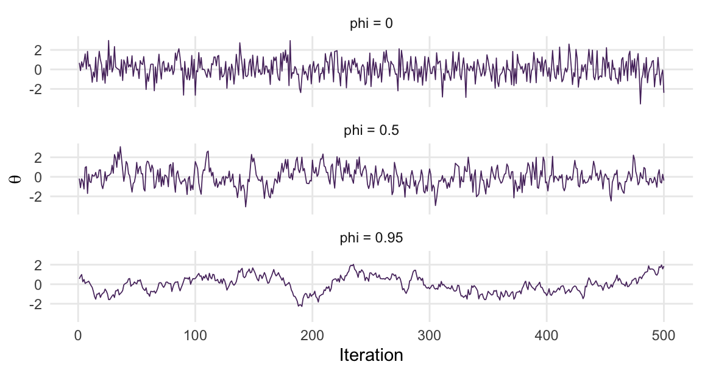
With \(\phi=0\), values move frequently between the two sides of zero. Most lie near the center, with occasional values farther away, as we expect for a standard Normal distribution. This is useful behavior when estimating the mean: the run samples both sides without spending long stretches on either one. With \(\phi=0.95\), values tend to stay above or below zero for stretches of time. This chain has the same standard Normal stationary distribution, but a short stretch may contain mostly positive or mostly negative values. Its average can therefore be far from zero.
4.1.1 The starting point
So far we have drawn the initial state from the target. Usually we cannot do that: obtaining posterior draws is the problem we are trying to solve. Instead, we choose a starting value and let the chain move from there. What happens if that value is far from the region where most of the target probability lies?
Consider four chains with \(\phi=0.99\), started at \(-6\), \(-3\), \(3\), and \(6\). The standard Normal target puts most of its probability between \(-2\) and \(2\). Figure 4.2 shows how these chains move from their starts toward that region.
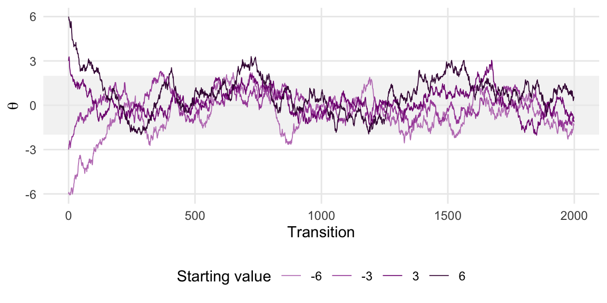
Early values can pull the estimated mean toward the starting point. Burn-in is the practice of discarding an initial part of the run to reduce this influence. A trace plot can reveal that early values are still moving away from the starting point. It cannot establish exactly when the effect of initialization has become negligible.
Some sampling algorithms also adjust their settings during an initial warm-up phase. Stan, which we use later in this chapter, does this. Its warm-up therefore serves two purposes: allowing movement away from the start and learning suitable sampling settings. Posterior summaries use the subsequent phase, with those settings fixed.
4.1.2 Warning patterns
The same questions arise with a posterior whose shape we do not know. Does the chain keep drifting? Does it remain near one value for long stretches? Do different chains explore different regions? Figure 4.3 illustrates these three patterns on a proportion scale.
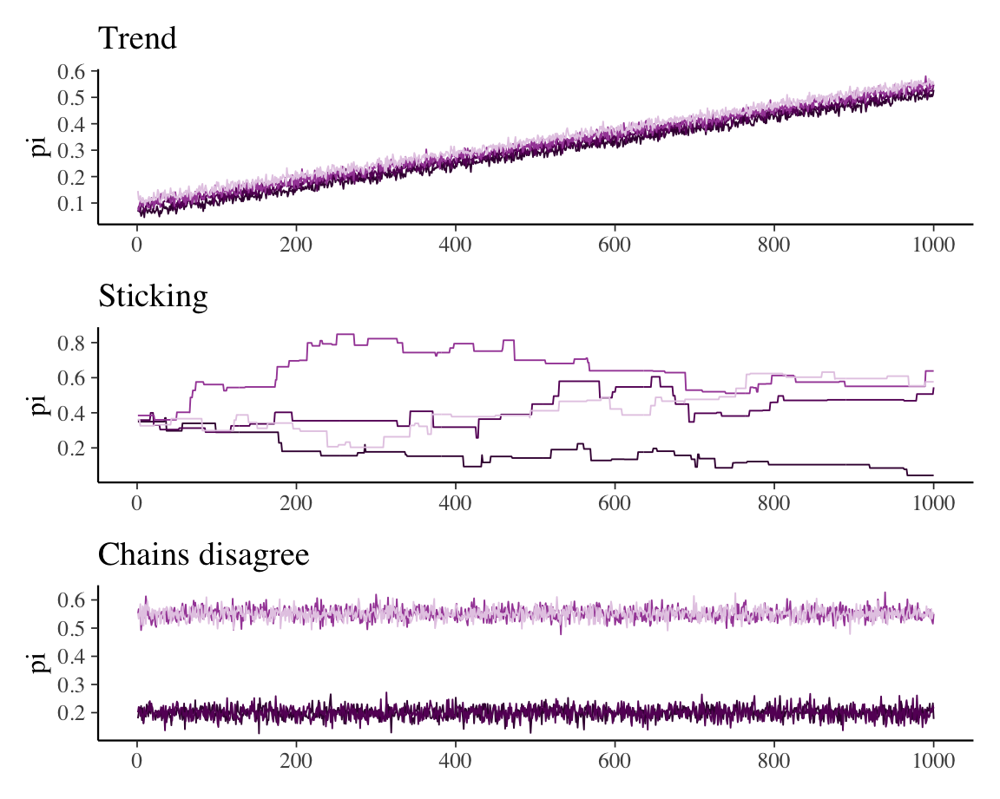
In the trend example, later values are consistently higher than earlier values, so the average depends strongly on where we stop. In the sticking example, long flat stretches contribute little new information. In the disagreement example, each record looks stable on its own, but the records give different answers about where the distribution lies.
These are deliberately constructed illustrations. The first adds an upward trend to random fluctuations. The second usually repeats its previous value and occasionally moves. The third generates values around two different centers. Their purpose is to make the warning patterns easy to recognize; the exercises contain subtler examples.
For an actual sampler, the pattern guides the next step. A chain still moving away from its start may need more warm-up. Slow movement may call for different sampling settings. Persistent separation between chains calls for investigation of why they are not exploring the same regions. We will encounter these problems when we build samplers in the coming chapters.
Quiz yourself!
A friend runs one very long chain of 100,000 iterations rather than four chains of 25,000. Their trace plot is a flat band of noise and they conclude that the chain has converged. Which of the three warning patterns could their design not have detected, and why?
4.2 Dependence and the accuracy of an average
Consecutive draws in a Markov chain are usually correlated: Where the chain is now tells you something about where it will be next. A chain in which that correlation dies away quickly is said to mix well; a chain that stays correlated over many iterations mixes poorly. Mixing affects how precisely we can estimate posterior summaries from a chain of a given length.
4.2.1 How far does the dependence persist?
The AR(1) traces show that nearby values can resemble one another. Compare each value with the next one, then with the value two steps later, and so on. The separation is called the lag. Lag 1 compares neighbors; lag 10 compares values ten iterations apart. The correlation at a given lag is called autocorrelation.
For a stationary chain, the lag-\(k\) autocorrelation is \[ \rho_k=\operatorname{Corr}(\theta^{(t)},\theta^{(t+k)}). \] A value near one means that high values tend to be followed by high values, and low values by low values, at that lag. A negative value indicates a tendency to lie on opposite sides of the mean. The autocorrelation function (ACF) plots these correlations against the lag.
For our AR(1) process, \(\rho_k=\phi^k\): each step carries forward a fraction \(\phi\) of the preceding state. Thus when \(\phi=0.95\), lag-one correlation is 0.95, lag-two correlation is \(0.95^2\), and lag-ten correlation is \(0.95^{10}\approx0.60\). Values ten steps apart still tend to resemble each other.
R estimates the autocorrelations from a simulated chain with acf(). For example, acf(ar1_chains[[3]]) plots them for the chain with \(\phi=0.95\). Figure 4.4 compares all three chains.
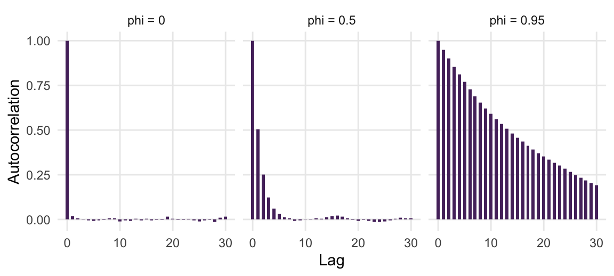
4.2.2 Repeating the simulation
To see what this means for an estimate, imagine repeating each simulation 200 times and recording its average each time. We use 2,000 states per run, drawing each initial state from the standard Normal target. The target mean is zero; the spread of the 200 averages tells us how precisely each type of chain estimates it. Each value in the histograms below is an average from a whole run.
The calculation for \(\phi=0.95\) is:
set.seed(84735)
means_95 <- replicate(200, mean(ar1_chain(0.95, 2000, init = rnorm(1))))Figure 4.5 compares these averages with those from \(\phi=0\) and \(\phi=0.5\).
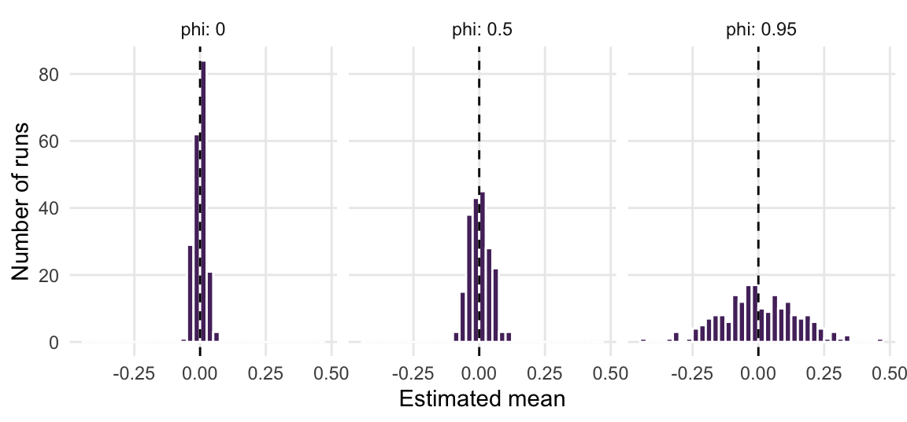
The chain with \(\phi=0.95\) can spend a substantial part of a run above or below zero. Its average therefore varies much more between runs than the average of independent draws. Each run contains the same number of values, but the resulting estimates are not equally precise. This is the cost of positive autocorrelation.
4.3 Effective sample size and Monte Carlo standard error
Suppose we estimate a target mean \(\mu\) by the average of \(N\) states, \[ \bar\theta=\frac1N\sum_{t=0}^{N-1}\theta^{(t)}. \] For independent draws, Chapter 1 gave \(\operatorname{Var}(\bar\theta)=\sigma^2/N\), where \(\sigma^2\) is the target variance. With positively correlated draws, neighboring values often pull the average in the same direction. The covariance terms account for this shared movement and increase the variance of the average.
For a stationary chain, the corresponding large-\(N\) approximation is \[ \operatorname{Var}(\bar\theta)\approx\frac{\sigma^2}{N} \left(1+2\sum_{k=1}^{\infty}\rho_k\right). \tag{4.1}\] This assumes a finite target variance and autocorrelations that die away fast enough for their sum to be finite. The factor in parentheses describes the effect of dependence. For independent draws, all the \(\rho_k\) are zero and the factor is one. Positive autocorrelations make it larger.
We can express this loss of precision as an effective sample size (ESS): the number of independent draws that would give approximately the same spread of estimated means across repeated runs. Writing \(\operatorname{Var}(\bar\theta)\approx\sigma^2/N_{\mathrm{eff}}\) gives \[ N_{\mathrm{eff}}=\frac{N}{1+2\sum_{k=1}^{\infty}\rho_k}. \] For the AR(1) chain, \(\rho_k=\phi^k\). Summing the geometric series gives \[ N_{\mathrm{eff}} \approx\frac{N}{1+2\sum_{k=1}^{\infty}\phi^k} =\frac{N}{1+2\phi/(1-\phi)} =N\frac{1-\phi}{1+\phi}. \] With \(\phi=0.95\), our 20,000-state chain has an effective sample size of approximately \(20{,}000\times0.05/1.95\approx513\). Its average is about as precise as an average of 513 independent standard Normal draws.
In most applications we do not know the autocorrelations. The function ess_basic() in the posterior package estimates ESS from the sampled values. By default it first splits each chain into two halves, a safeguard we return to when comparing chains; split = FALSE keeps each of our single chains whole. Compare the estimates with the known AR(1) formula:
tibble(phi = phis,
ess_formula = N_ar1 * (1 - phi) / (1 + phi),
ess_estimated = sapply(ar1_chains, ess_basic, split = FALSE))
#> # A tibble: 3 × 3
#> phi ess_formula ess_estimated
#> <dbl> <dbl> <dbl>
#> 1 0 20000 19079.
#> 2 0.5 6667. 6706.
#> 3 0.95 513. 558.The columns need not agree exactly. The formula uses known correlations and a long-run approximation; the function uses correlations estimated from a particular path. Repeating the simulation gives different ESS estimates, especially when dependence is strong. Section C.1 derives the exact variance for a chain of \(N\) states and explains the approximation.
4.3.1 Expressing precision in the units of the estimate
ESS tells us how much precision we have relative to independent sampling. To express that precision in the units of the mean, take the square root of its variance: \[ \operatorname{MCSE}(\bar\theta)\approx\frac{\sigma}{\sqrt{N_{\mathrm{eff}}}}. \tag{4.2}\] This is the Monte Carlo standard error (MCSE). It estimates the standard deviation of the averages we would obtain across repeated runs, as illustrated in Figure 4.5.
For the standard Normal target, \(\sigma=1\). The three 20,000-state runs therefore have approximate MCSEs of \(1/\sqrt{20{,}000}=0.007\) when \(\phi=0\), \(1/\sqrt{6{,}667}=0.012\) when \(\phi=0.5\), and \(1/\sqrt{513}=0.044\) when \(\phi=0.95\).
An estimated mean of 0.04 is thus less than one MCSE from zero for the slowest chain, but more than five MCSEs away for independent draws. An error of 0.04 would thus be quite ordinary for the slowest chain and unusual for independent draws. mcse_mean() estimates the MCSE from the draws:
tibble(phi = phis,
estimated_mean = sapply(ar1_chains, mean),
mcse = sapply(ar1_chains, mcse_mean))
#> # A tibble: 3 × 3
#> phi estimated_mean mcse
#> <dbl> <dbl> <dbl>
#> 1 0 -0.00160 0.00721
#> 2 0.5 -0.0211 0.0122
#> 3 0.95 0.0517 0.0417An MCSE is not a bound on the error in one run. Differences of one or two MCSEs from the target mean are unsurprising, and larger differences sometimes occur. We use MCSE to judge the expected scale of numerical error and to decide whether further simulation is worthwhile.
Suppose we need an MCSE of 0.02 for the Normal mean. We need approximately \(N_{\mathrm{eff}}=(1/0.02)^2=2{,}500\). For \(\phi=0.95\), this requires \[ N\approx2{,}500\frac{1+0.95}{1-0.95}=97{,}500 \] stored states. Our current 20,000-state run is too short for that purpose. With \(\phi=0.5\), the same target precision requires about 7,500 states. Improving mixing can therefore save substantial computation.
More generally, when the sampler’s behavior stays similar, multiplying the retained run length by four approximately halves the MCSE. A pilot run with MCSE \(e\) suggests multiplying its length by \((e/e_{\mathrm{target}})^2\), where \(e_{\mathrm{target}}\) is the MCSE we want to achieve. This is a planning estimate: check the MCSE again after the longer run.
4.3.2 Would thinning help?
The chain with \(\phi=0.95\) is highly correlated at lag 1 but less so at lag 10, since \(0.95^{10}\approx0.60\). That suggests a fix: Keep every tenth draw and throw the rest away. The retained draws are less correlated, so surely they are better? This is called thinning.
But lower correlation is only part of the comparison. We also have fewer draws. The values we discard were correlated with their neighbors, but they still contributed to estimating the target mean. After keeping every tenth value, we have 2,000 states with lag-one correlation \(0.95^{10}\). Their theoretical ESS is \[ 2{,}000\frac{1-0.95^{10}}{1+0.95^{10}}\approx502, \] slightly below the full run’s ESS of 513. The two effects nearly cancel, leaving a slightly less precise average.
We can make the same comparison with estimated ESS:
theta_95 <- ar1_chains[[3]]
c(full = ess_basic(theta_95, split = FALSE),
thinned = ess_basic(theta_95[seq(1, N_ar1, by = 10)], split = FALSE))
#> full thinned
#> 557.8409 521.3920An estimated ESS can occasionally be larger after thinning because it is itself estimated with noise. In this example, the theoretical ESS decreases slightly. A practical reason to thin is storage: retaining every value can be costly in a large model. Thinning can also reduce the cost of later calculations. Otherwise, keep the full run.
Quiz yourself!
Two chains target the same posterior. Their stationary autocorrelations are \(\rho_k=0.9^k\) for chain A and \(\rho_k=0.3^k\) for chain B. If you can afford 10,000 iterations, which chain gives the more precise estimate of the posterior mean, and roughly by how much?
4.3.3 Bias and variation are different problems
Starting a chain far from the region where most posterior values lie can pull its estimated mean toward the starting value. This is initialization bias. Discarding enough early values can reduce this effect.
Even after the starting point has little influence, repeated simulations give different estimates. This is Monte Carlo variation. Retaining more draws generally reduces that variation, although strongly dependent draws improve precision more slowly than independent draws.
These two sources of error are related. A longer run can also reduce the influence of the starting point, because the early values make up a smaller share of the average. But running longer only helps if the chain explores the posterior: A chain that misses an important region can give a very precise estimate of the wrong answer (Margossian & Gelman, 2026).
We can see both effects by repeating the Normal simulation from the fixed starting value 6, using \(\phi=0.99\). In Figure 4.6 we vary how many early states we discard and how many later states we retain. Each panel contains the estimated means from 200 runs.
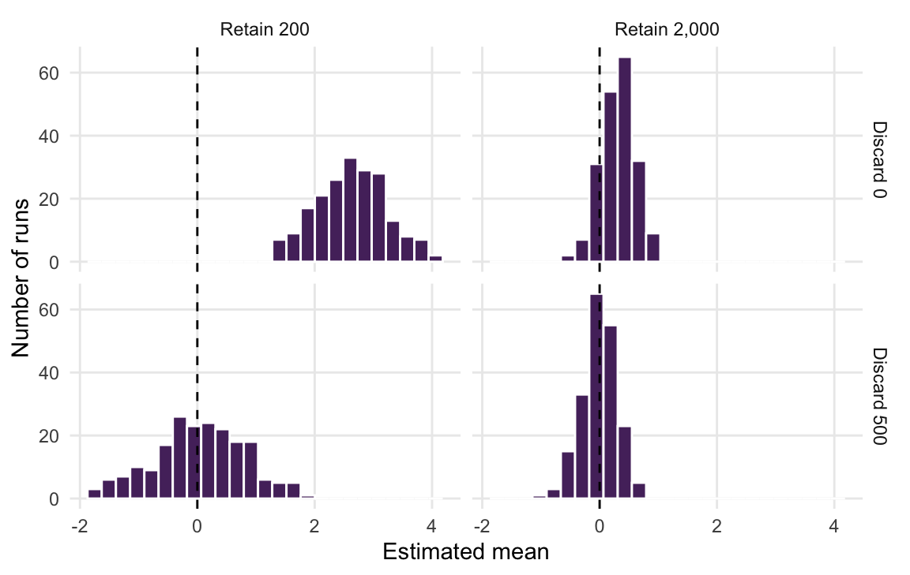
In the upper panels, early values near 6 pull the estimates above zero. Discarding 500 states largely removes that shift. Compare the columns as well: Retaining 2,000 states gives a narrower spread of estimates than retaining 200. Burn-in addresses the influence of initialization; more retained values improve precision once the chain is exploring the target satisfactorily.
A small MCSE answers the precision question. It does not establish that initialization bias is negligible or that the chain has visited every important region. We therefore need to compare chains as well as assess the precision within a run.
Quiz yourself!
A fit reports a posterior mean of \(12.4\) with posterior standard deviation \(3.0\) and \(N_{\mathrm{eff}} = 36\). What is the MCSE of the posterior mean? How would you communicate its numerical uncertainty? How many effective draws would give a mean MCSE of \(0.05\)?
4.4 Comparing several chains
A single chain cannot reveal that another starting point would lead to a different answer. Several chains let us make that comparison. If they explore the same distribution sufficiently well, their means and ranges should be similar. Persistent differences are a reason to investigate.
Consider two sets of four records in Figure 4.7. In the first set, every record consists of standard Normal draws. In the second, two records fluctuate around \(-2\) and two around \(2\), each with standard deviation one. These illustrate agreement and disagreement about location. Each matrix below has 1,000 rows and four columns, one column per record. We create the second set by shifting two columns down by two and two up by two.
set.seed(84735)
agree <- matrix(rnorm(4000), ncol = 4)
separated <- matrix(rnorm(4000), ncol = 4)
separated[, 1:2] <- separated[, 1:2] - 2
separated[, 3:4] <- separated[, 3:4] + 2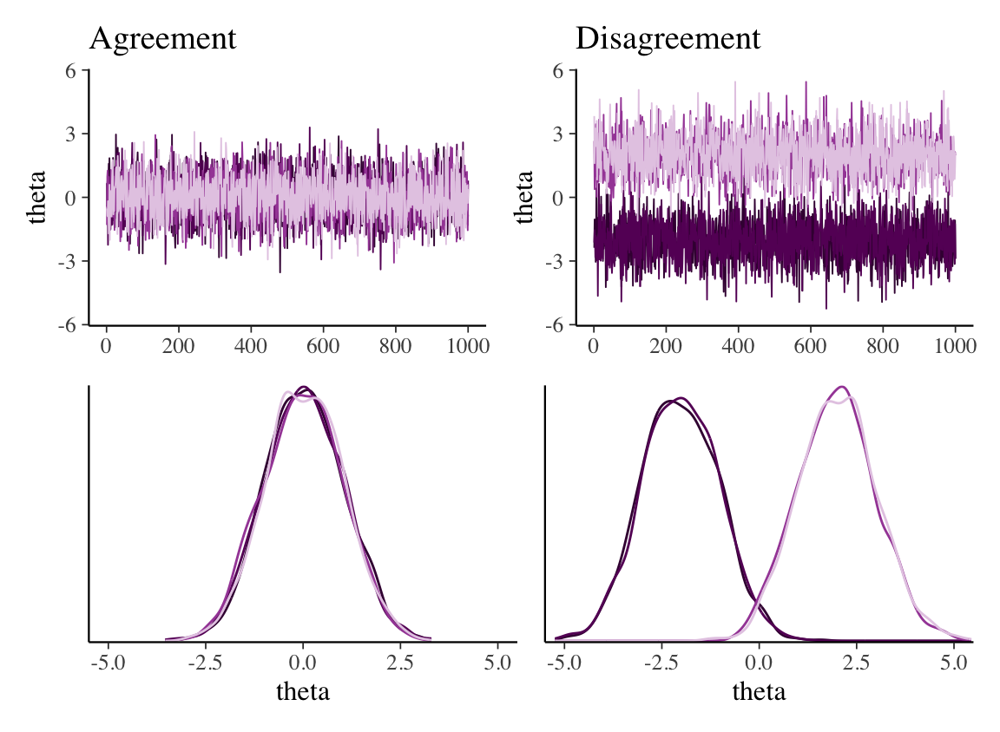
The individual records in both sets have little autocorrelation. That tells us about dependence within each record; it does not tell us whether the records agree with one another. In the second set, pooling the values would hide the fact that no individual record has covered the combined distribution.
4.4.1 The idea behind R-hat
The diagnostic \(\widehat R\), pronounced R-hat, compares variation between chains with variation within chains (Gelman & Rubin, 1992). It is close to one when these give compatible pictures of the distribution, and larger when the chains disagree.
Suppose there are \(m\) chains with \(L=N/m\) retained values each, where \(N\) is the total number of retained values. Write \(\bar\theta_j\) and \(s_j^2\) for the sample mean and sample variance of chain \(j\). The average of the chain variances is \[ W=\frac{1}{m}\sum_{j=1}^{m}s_j^2. \] This describes how much values vary within the chains. To compare the chains, calculate the sample variance of their means and multiply it by the chain length: \[ B=\frac{L}{m-1}\sum_{j=1}^{m}(\bar\theta_j-\bar\theta_{\cdot})^2, \qquad \bar\theta_{\cdot}=\frac{1}{m}\sum_{j=1}^{m}\bar\theta_j. \] Here \(\bar\theta_{\cdot}\) is the average of the chain means. The basic calculation combines \(W\) and \(B\) as \[ \widehat{\operatorname{var}}^{+}=\frac{L-1}{L}W+\frac{B}{L}, \qquad \widehat R=\sqrt{\frac{\widehat{\operatorname{var}}^{+}}{W}}. \] The numerator includes differences between the chain means, whereas the denominator describes variation within the chains. Large differences between the means can therefore raise the ratio above one.
Return to the disagreeing records in Figure 4.7, stored in separated. We calculate a mean and a sample variance for each column. colMeans() gives the four means; apply(separated, 2, var) applies var() to each column:
chain_means <- colMeans(separated)
chain_variances <- apply(separated, 2, var)
rbind(mean = chain_means, variance = chain_variances)
#> [,1] [,2] [,3] [,4]
#> mean -2.0304360 -2.0191015 1.9859088 2.02687
#> variance 0.9664289 0.9663091 0.9986177 1.01906The sample variances are close to one, but they differ because they come from different random draws. Averaging them gives \[ W\approx\frac{0.966+0.966+0.999+1.019}{4}=0.988. \] The four means are approximately \(-2.030\), \(-2.019\), \(1.986\), and \(2.027\). We calculate their sample variance and multiply it by \(L=1{,}000\) to obtain \(B\). The code uses the unrounded values for all calculations:
L <- nrow(separated)
W <- mean(chain_variances)
B <- L * var(chain_means)
var_plus <- (L - 1) / L * W + B / L
c(W = W, B = B, rhat = sqrt(var_plus / W))
#> W B rhat
#> 0.987604 5417.046370 2.546378With \(B\approx5417.05\), the resulting comparison is \[ \widehat R\approx \sqrt{\frac{(999/1000)\times0.988+5417.05/1000}{0.988}} \approx2.546. \] The records differ much more from one another than their individual variances suggest. The large R-hat makes that disagreement visible in a single number.
4.4.2 Comparing earlier and later values
Whole-chain averages can miss a shared trend. In the upward-trending example in Figure 4.3, all four records rise from a low level to a high level at about the same rate. Their overall means can be similar even though the traces are still changing.
Split R-hat addresses this by dividing each chain into an earlier half and a later half, then treating the halves as separate chains. Four chains become eight half-chains. In the trend example, the earlier halves have lower means than the later halves, so the comparison reveals the change over time.
We can see the difference by generating a fresh set of four such records, with \(L=1{,}000\) values each as before. Each column adds the same increasing sequence to small random fluctuations. The two calls to rhat_basic() compare the basic calculation before and after splitting:
set.seed(84735)
trend <- sapply(1:4, function(j) {
0.05 + 0.015 * j + seq(0, 0.45, length.out = L) +
rnorm(L, 0, 0.012)
})
c(basic = rhat_basic(trend, split = FALSE),
split = rhat_basic(trend, split = TRUE))
#> basic split
#> 1.010445 2.085559The basic value is 1.0104 despite the obvious upward movement. It is barely above the diagnostic target of 1.01, so it gives at most a weak warning. Splitting raises the value to about 2.086: the difference between the earlier and later halves now produces a much clearer warning.
For practical use, posterior::rhat() performs this split and also checks for differences in spread (Vehtari et al., 2021). It accepts a matrix with one column per chain. Applied to the two sets in Figure 4.7:
c(agreement = posterior::rhat(agree), disagreement = posterior::rhat(separated))
#> agreement disagreement
#> 1.000479 1.726001Use \(\widehat R<1.01\) as a diagnostic target for each monitored parameter. A value of 1.04 calls for investigation even if the software uses a looser warning threshold. Inspect the traces and density curves to see what differs. If the chains agree, assess whether their MCSEs are small enough for the quantities you want to report.
Rank normalization compares the ranks of the sampled values, reducing the influence of a few extreme values. Folding compares their distances from a common center. This helps reveal chains that have similar means but different spreads—a disagreement that comparing means alone can miss. Section C.3 explains both calculations.
4.5 A worked analysis: Dutch-language radio
Suppose you want to know what proportion of the songs played on Dutch radio station NPO 3FM are sung in Dutch. Let \(\pi\) denote that proportion. You choose a Beta\((2,5)\) prior and listen to \(n=20\) randomly selected tracks, seven of which are in Dutch. The Beta-Binomial update from Chapter 2 gives \[ \pi\mid y\sim\text{Beta}(9,18). \] We will estimate its mean and a 95% credible interval by simulation. The exact posterior gives us a useful check on the results. For this analysis, suppose we want the MCSE of the mean to be at most 0.005 on the proportion scale, half a percentage point in the reported proportion, and the MCSE of each interval endpoint to be at most 0.01, one percentage point. The endpoints get the looser tolerance because relatively few draws fall near them, so they are harder to pin down than the mean. We will check the mean and both interval endpoints against these tolerances.
4.5.1 Generating the chains with Stan
Stan (Carpenter et al., 2017) generates posterior draws from a model specification. We tell it what is observed, which parameters are unknown, and which prior and likelihood define the model. Its sampling algorithm is explained in Chapter 10 (Hamiltonian Monte Carlo). Here we use it to obtain chains that we can inspect with the tools just developed.
The R package rstan fits a model written in Stan’s language. The model has three blocks: data declares the observations, parameters declares the unknown proportion, and model specifies the prior and likelihood.
radio_model <- "
data {
int<lower = 0> n; // number of tracks sampled
int<lower = 0, upper = n> y; // number of tracks in Dutch
}
parameters {
real<lower = 0, upper = 1> pi; // proportion of tracks in Dutch
}
model {
y ~ binomial(n, pi); // likelihood
pi ~ beta(2, 5); // prior
}
"Here int means an integer count and real a continuous quantity. The bounds restrict pi to proportions between zero and one. The two statements in model describe the Binomial likelihood and Beta prior; Stan uses them to evaluate the log posterior.
We ask for four chains of 2,000 iterations, discarding the first 1,000 of each as warm-up. The remaining 1,000 values per chain give \(N=4{,}000\) retained draws:
set.seed(84735)
radio_data <- list(n = 20, y = 7)
radio_fit <- stan(model_code = radio_model, data = radio_data,
chains = 4, iter = 2000, warmup = 1000,
seed = 84735, refresh = 0)The first call compiles the model before sampling, which can take longer than the simulation itself. as.array() then arranges the retained draws by iteration, chain, and parameter. We select pi, leaving a matrix with one column per chain. The two blank positions in radio_array[, , "pi"] keep every retained iteration and every chain:
radio_array <- as.array(radio_fit)
pi_mat <- radio_array[, , "pi"]
dim(pi_mat)
#> [1] 1000 4Keep this structure when computing diagnostics. Flattening the matrix into one long vector would lose the chain boundaries.
Quiz yourself!
You call stan() with chains = 3 and iter = 5000, leaving warm-up at its default of half the iterations. How many draws do you retain per chain and in total? What changes if you set warmup = 500?
4.5.2 Do the chains explore similar values?
The bayesplot package provides one function for each graphical check. mcmc_trace() shows movement over time, mcmc_acf() shows dependence within each chain, and mcmc_dens_overlay() draws a density curve for each chain. The argument pars = "pi" selects the proportion we want to examine. Figure 4.8 brings these three plots together with patchwork, where / stacks plots and | places them side by side. Read them as complementary views of the same simulation.
(mcmc_trace(radio_array, pars = "pi") + legend_none()) /
(mcmc_acf(radio_array, pars = "pi", lags = 20) |
(mcmc_dens_overlay(radio_array, pars = "pi") + legend_none()))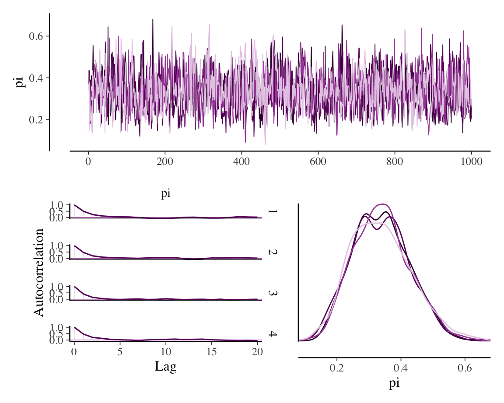
The traces fluctuate through similar ranges, their autocorrelations fall quickly, and the density curves overlap. R-hat provides the corresponding numerical comparison:
posterior::rhat(pi_mat)
#> [1] 1.003033For this run it is 1.003, below 1.01. We also ask Stan to check for problems specific to its sampling algorithm:
rstan::check_hmc_diagnostics(radio_fit)
#>
#> Divergences:
#> 0 of 4000 iterations ended with a divergence.
#>
#> Tree depth:
#> 0 of 4000 iterations saturated the maximum tree depth of 10.
#>
#> Energy:
#> E-BFMI indicated no pathological behavior.Stan reports no such problems for this fit. Chapter 10 (Hamiltonian Monte Carlo) explains these checks in detail. When a fit does produce warnings, investigate them before relying on the posterior summaries.
4.5.3 Is the mean precise enough?
Calculate the posterior mean, posterior standard deviation, and MCSE of the mean:
c(mean = mean(pi_mat), posterior_sd = sd(pi_mat),
mean_mcse = mcse_mean(pi_mat))
#> mean posterior_sd mean_mcse
#> 0.338817635 0.089925277 0.002332468The estimated mean is 0.339, with MCSE 0.0023. This meets our target of 0.005. The exact mean is \(9/27=1/3\); the difference between the simulated and exact means is 0.0055, or 2.4 MCSEs. That is a little larger than the one or two MCSEs we called unsurprising, but well within the range that repeated runs produce; it is not a sign that anything is wrong.
Keep the two standard deviations separate. The posterior standard deviation, about 0.09, describes uncertainty about the unknown proportion of Dutch-language tracks. The MCSE describes uncertainty in our numerical estimate of the posterior mean. Running the chain longer can reduce the second without changing the first.
4.5.4 Are the interval endpoints precise enough?
A precise mean does not ensure a precise credible interval. The endpoints are the 2.5% and 97.5% quantiles: they leave 2.5% of the posterior probability below the interval and 2.5% above it. We need to assess their numerical error separately. mcse_quantile() calculates the MCSE at specified probabilities:
interval_precision <- tibble(
probability = c(0.025, 0.975),
estimate = as.numeric(quantile(pi_mat, c(0.025, 0.975))),
exact = qbeta(probability, 9, 18),
mcse = as.numeric(mcse_quantile(pi_mat, probs = probability))
)
interval_precision
#> # A tibble: 2 × 4
#> probability estimate exact mcse
#> <dbl> <dbl> <dbl> <dbl>
#> 1 0.025 0.180 0.172 0.00436
#> 2 0.975 0.522 0.518 0.00458Each row gives an endpoint estimate, its exact value, and its MCSE. The MCSEs are 0.0044 and 0.0046. Both are below 0.01, so this run also meets our requirement for the interval. The estimated 95% credible interval is [0.180, 0.522]. The MCSEs describe how much its endpoints would change between simulations; they do not describe uncertainty about \(\pi\) itself.
If an endpoint’s MCSE had been 0.02, a run about four times as long would be a reasonable starting plan for reaching 0.01. We would then check both the chain behavior and the achieved precision again. Tail quantiles often need many effective draws because relatively few sampled values lie near the endpoints. There is no single ESS threshold that ensures a chosen decimal precision for every posterior.
4.5.5 Reading bulk and tail ESS in a summary
Software summaries often include ess_bulk and ess_tail. These give broad checks on sampling efficiency in the main body and tails of the distribution (Vehtari et al., 2021). For the radio fit:
c(ess_bulk = ess_bulk(pi_mat), ess_tail = ess_tail(pi_mat))
#> ess_bulk ess_tail
#> 1482.134 1532.167Bulk ESS uses the relative ordering of the draws to assess sampling through the main body of the distribution. Tail ESS is the smaller of the ESS estimates for the 5% and 95% quantiles. A large bulk ESS with a small tail ESS is a reason to look more closely at the tails, especially when reporting a credible interval.
Practical diagnostic targets
- Aim for R-hat below 1.01 for every monitored parameter.
- With four chains, aim for both bulk ESS and tail ESS of at least 400 in total (Vehtari et al., 2021).
- Check the MCSE of each summary you intend to report. Meeting the ESS target does not necessarily give enough precision for your purpose.
Use these targets alongside the trace plots and sampler checks. They do not guarantee that every important posterior region has been explored.
4.5.6 What would we report?
Under the Beta-Binomial model, the posterior mean proportion of Dutch-language tracks is approximately 0.34, with a 95% credible interval from 0.18 to 0.52.
R-hat is 1.003, below 1.01. Bulk and tail ESS are 1482 and 1532, both above 400. The MCSE of the mean is 0.0023, below our tolerance of 0.005, and the MCSEs of the interval endpoints are 0.0044 and 0.0046, both below our tolerance of 0.01. Together with the satisfactory plots and absence of Stan sampler warnings, these results give us a reason to stop sampling for the present analysis.
Figure 4.9 compares the simulated distribution with the known posterior. In a more complex model this exact check may be unavailable, but the diagnostic questions remain the same.
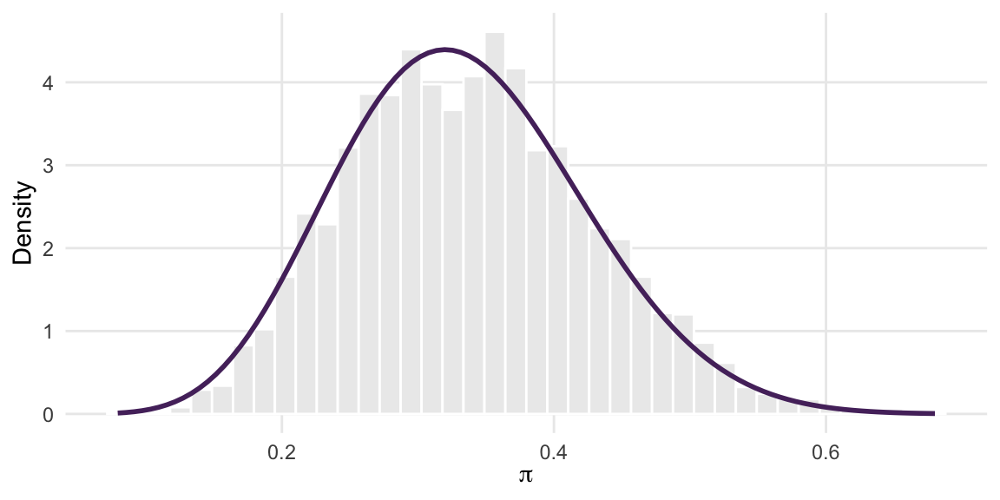
Choosing the next step
- Early values still move away from the starts: consider more warm-up and inspect the new runs.
- Chains explore similar values, but the required summaries have large MCSEs: retain more draws or improve mixing.
- Chains remain in different regions, or the sampler reports problems: investigate the cause before relying on a longer run.
- Plots and diagnostics are satisfactory, and the intended summaries meet their precision targets: report the estimates with their numerical precision.
4.6 What a reassuring run can miss
Agreement over a short interval does not establish that a longer run will behave the same way. Figure 4.10 illustrates a record that looks stable for its first 1,000 values but later moves to a different level.
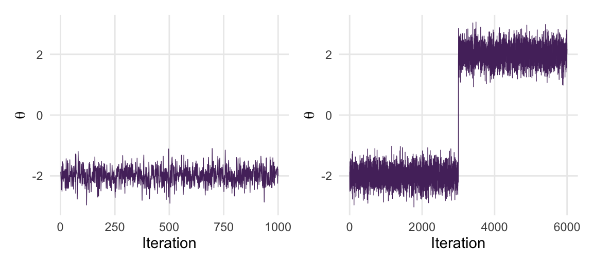
The late change might represent arrival in a region with more posterior probability, or movement between two modes. One jump does not tell us which explanation applies. We need to examine the longer run and, when several modes are present, see whether the chains move between them repeatedly.
Several chains can also agree because they have all missed the same region. Suppose the target is an equal mixture of N\((-3,1)\) and N\((3,1)\). Its mean is zero and half its probability lies on each side of zero. What would we see if every chain stayed near the left mode?
We can illustrate that output with four AR(1) records centered at \(-3\). These sample the left Normal component; they are not samplers for the full mixture. Figure 4.11 compares their output with the whole target.
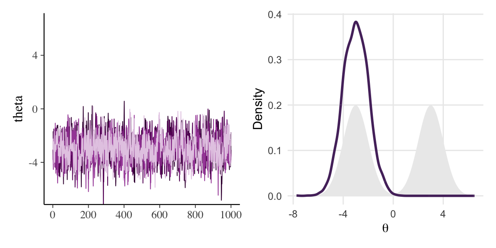
The traces look stable and R-hat is 1.002. Nevertheless, the estimated mean is near \(-3\) rather than zero. Agreement has not revealed the missing mode. An MCSE calculated from these records describes variation within the explored region and misses the much larger error caused by incomplete exploration.
Dispersed starting values help because different chains may find different regions. Knowledge of the model also matters: a mixture model, for example, may suggest several modes worth investigating. Chapter 5 shows this difficulty with an actual sampler. No diagnostic based only on visited values can tell us everything about a region that was never visited.
A separate question is whether the model describes the observed data well. Even an accurate simulation can represent the posterior of an unsuitable model. Posterior predictive checks address that question by comparing observations simulated from the fitted model with the data.
4.7 Chapter summary
A finite simulation needs both adequate exploration and adequate precision. Trace plots reveal movement over time, and comparisons between chains can expose regions explored from one starting point but not another. Burn-in reduces the influence of initialization; Stan’s warm-up also adjusts its sampling settings.
Autocorrelation explains why a long chain can give an imprecise average. Effective sample size expresses that precision relative to independent draws, and MCSE expresses the numerical uncertainty in the units of the summary. More retained draws generally reduce Monte Carlo variation, but they do not reduce posterior uncertainty about the parameter.
R-hat compares chains and their halves. Use it alongside plots and sampler checks, then assess the MCSE of each mean, probability, or interval endpoint you intend to report. Satisfactory diagnostics support a decision to use the results; they cannot prove that no important region has been missed.
4.8 Quiz answers
Quiz 1. Disagreement between chains. A single chain confined to one mode can produce a stable-looking trace. Additional chains started elsewhere may reveal a different region. Drift and flat stretches can be visible within one chain; comparison between chains requires more than one.
Quiz 2. If the ACF decays geometrically, \(\rho_k = \rho_1^k\), then \(N_{\mathrm{eff}} = N (1 - \rho_1)/(1 + \rho_1)\). Chain A is worth \(10{,}000 \times 0.1 / 1.9 \approx 526\) independent draws and chain B \(10{,}000 \times 0.7 / 1.3 \approx 5{,}385\), about ten times as many. The Monte Carlo standard error of chain B’s posterior mean is therefore about \(\sqrt{10} \approx 3.2\) times smaller.
Quiz 3. The mean MCSE is \(3.0/\sqrt{36}=0.5\). Communicate the estimate with its numerical uncertainty, for example an estimated posterior mean of 12.4 with MCSE 0.5, rather than claiming that its first decimal is stable. A target MCSE of 0.05 requires \(N_{\mathrm{eff}}=(3.0/0.05)^2=3{,}600\), one hundred times as many effective draws. This target does not guarantee stable rounding.
Quiz 4. Each chain runs 5,000 iterations, of which the first 2,500 are warm-up by default, leaving 2,500 draws per chain and \(3 \times 2{,}500 = 7{,}500\) in total. With warmup = 500, only 500 iterations per chain are discarded, so you keep 4,500 per chain and 13,500 in total. Whether 500 is adequate requires checking adaptation, sampler warnings, and the retained chains; a trace alone cannot settle it.
4.9 Exercises
4.9.1 Conceptual exercises
Exercise 4.1 (Warm-up or burn-in?) Explain the difference between burn-in and Stan’s warm-up. Why are adaptation draws excluded even when initialization is near the posterior mode? For a fixed transition rule, distinguish starting at the mode from drawing the initial state from the exact posterior. Which establishes stationarity, and why?
Exercise 4.2 (Thinning by the numbers) A chain of \(N = 20{,}000\) draws has autocorrelations \(\rho_k = 0.9^k\).
- Compute its effective sample size.
- The chain is thinned by keeping every fifth draw. What are the autocorrelations of the thinned chain, and what is its effective sample size?
- A colleague argues that the thinned chain is better because its draws are “almost independent.” Explain what they have confused.
Exercise 4.3 (Four messages) A classmate is running their first Stan models and sends you four messages during the afternoon. Reply to each in two or three sentences, stating what the diagnostic says and what they should do next.
- “My \(\widehat{R}\) is 1.00 and the trace plot is a flat band. Am I done?”
- “My \(\widehat R\) is 1.04, but the software has not warned me. Does that mean the chains are adequate?”
- “My
ess_bulkis 3,000 but myess_tailis 90. I only care about the posterior mean, so can I ignore the tail?” - “My \(\widehat{R}\) is 1.6. I’ll just run the chains ten times longer.”
Exercise 4.4 (How precise is precise enough?) A posterior mean is estimated as \(0.412\) with posterior standard deviation \(0.08\) from a chain with \(N_{\mathrm{eff}} = 250\).
- Compute the mean MCSE and give an approximate interval of plus or minus two MCSEs for the numerical uncertainty in the estimated posterior mean. Does this support claiming that its rounding to two decimal places is stable?
- How many effective draws are needed to make the MCSE smaller than \(0.001\)?
- Explain in one paragraph why increasing \(N_{\mathrm{eff}}\) shrinks the MCSE but does not shrink the posterior standard deviation, and why a Bayesian should care about the difference.
4.9.2 Practical exercises
Exercise 4.5 (Diagnose these chains) Figure 4.12 shows trace plots of four sets of chains, labelled A to D, and Figure 4.13 shows the corresponding density overlays. The patterns are subtler than the ones in Figure 4.3. For each set, decide whether the chains look healthy, and if not, name the pathology and the diagnostic that reveals it most clearly. Then say, for each unhealthy set, what further information would be needed to judge whether a longer run would help. The records illustrate patterns; do not assume that their generating rules are valid posterior samplers.
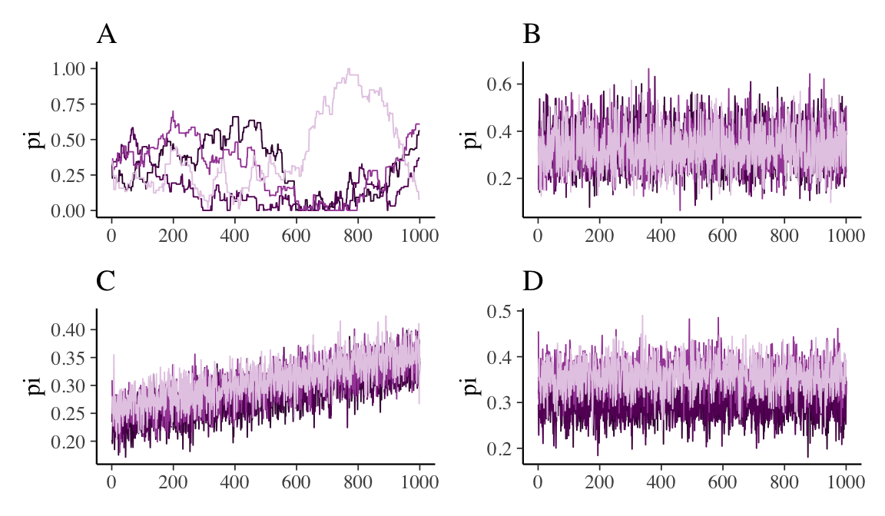
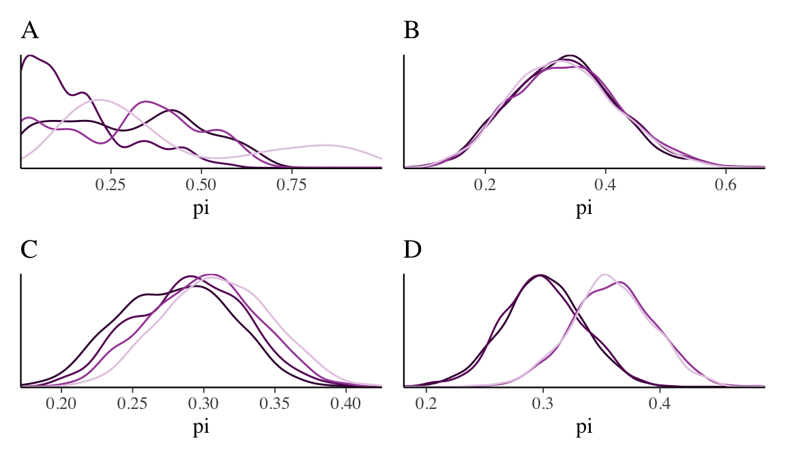
Exercise 4.6 (A mixing laboratory) Use ar1_chain() from this chapter.
- For \(\phi \in \{0, 0.3, 0.6, 0.9, 0.99\}\), simulate a chain with \(N=20{,}000\) stored states, including its initial state, and compute
ess_basic(). Draw that initial state from N\((0,1)\) to isolate dependence from initialization. Plot the effective sample size against \(\phi\) and add the curve \(N(1-\phi)/(1+\phi)\). - For \(\phi = 0.99\), plot the trace of the first 1,000 iterations. Describe what you see and relate it to the effective sample size you computed.
- For each \(\phi\), compute the MCSE of the posterior mean using
mcse_mean(). Since the true mean is zero, compare the MCSE with the actual error \(|\bar\theta - 0|\) of each chain. Repeat the simulation with a few seeds. Is the MCSE an honest description of the error?
Exercise 4.7 (\(\widehat{R}\) by hand; optional) Optional extension: Use rhat_by_hand() and split_halves() from Section C.2.
- Simulate four records of \(N=1{,}000\) stored states from
ar1_chain()with \(\phi=0.95\), each started atinit=0. Compute unsplit and split basic R-hat by hand. Compare them withrhat_basic(split=FALSE)andrhat_basic(split=TRUE), and also reportposterior::rhat(). Are these fixed-start records stationary at time zero? - Now start the four chains at \(-10, -5, 5\), and \(10\). Repeat the same comparisons. Then discard the first 200 iterations of each chain and compute them again. Explain what changed.
- Construct four chains that have the same mean but where two chains have three times the spread of the other two, as in Section C.3. Compare
rhat_basic()andposterior::rhat()and identify any difference in the values relative to 1.01, and explain which of the two ingredients of the rank-normalized \(\widehat{R}\), rank normalization or folding, is responsible.
4.9.3 Applied exercises
Exercise 4.8 (An undercooked bicycle counter) A bicycle counter on Amsterdam’s Weesperstraat records 23, 19, 25, 21, and 17 bicycles in five one-minute windows. Assume a constant rate \(\lambda\), with \(Y_i\mid\lambda\sim\operatorname{Pois}(\lambda)\) and a Gamma\((20,1)\) prior (shape 20, rate 1). The exact posterior is Gamma\((125,6)\).
Write this model in Stan as bikes_model, using an array of observed counts in the data block, array[n] int<lower = 0> y;, and a positive real parameter lambda. Fit it with chains = 4, iter = 60, and seed = 84735.
- Run the full diagnostic workflow. Which checks fail? Distinguish warnings about the agreement or precision of the chains from warnings about Stan’s sampling algorithm; Chapter 10 explains the latter in detail.
- Fit the model at
iter = 60, 100, 200, 400, 800, 1600, 3200, using the same seed. Record R-hat, bulk ESS, tail ESS, mean MCSE, and sampler warnings. Report the first tested setting with R-hat below 1.01, both ESS values at least 400, no sampler warnings, and satisfactory plots. If needed, extend the schedule. Explain why this is not a universal minimum or a guarantee that every larger setting passes. - Estimate \(P(\lambda>22\mid y)\) with an indicator average: give each draw value one if \(\lambda>22\) and zero otherwise, then average. Apply
mcse_mean()to this indicator matrix to assess numerical precision, keeping one column per chain. Use a pilot run to plan a run with indicator MCSE at most 0.0025, then check the achieved MCSE and diagnose the final fit. Compare the result with the exact Gamma-posterior probability. Explain why this numerical tolerance does not guarantee stable two-decimal rounding.
Exercise 4.9 (Gen X at the MoMA) The moma_sample data in the bayesrules package records, for a random sample of 100 artists represented in the Museum of Modern Art in New York, whether each was born in the Generation X years or later (the variable genx). Let \(\pi\) be the proportion of such artists in the museum’s collection.
- Choose a Beta prior for \(\pi\) that reflects your own expectation, and justify it in one sentence.
- Write the Beta-Binomial model in Stan and fit it with four chains. Run the full diagnostic workflow and report \(\widehat{R}\),
ess_bulk,ess_tail, and the MCSE of the posterior mean. - Compare the Stan posterior with the exact Beta posterior, both graphically and by posterior mean and 95% credible interval. Are the differences within what the MCSE leads you to expect?
- Fit the model again from four dispersed values strictly inside \((0,1)\); the endpoints are not valid finite initial values on Stan’s unconstrained scale. Does anything in the diagnostics change? Should it?